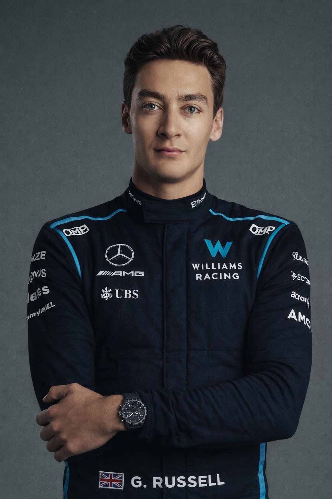
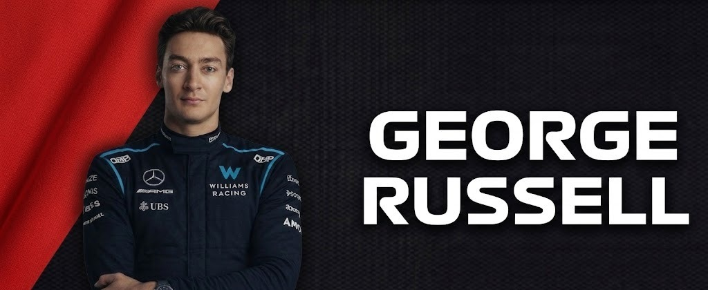
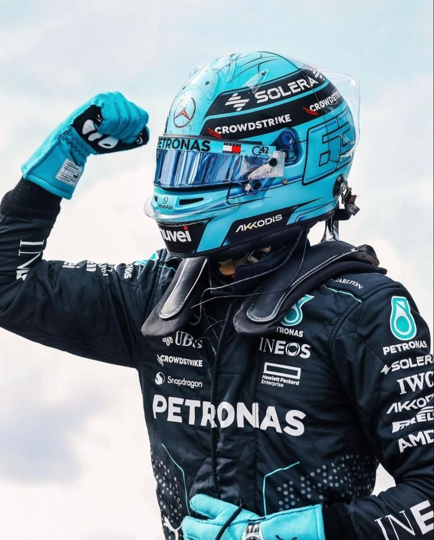
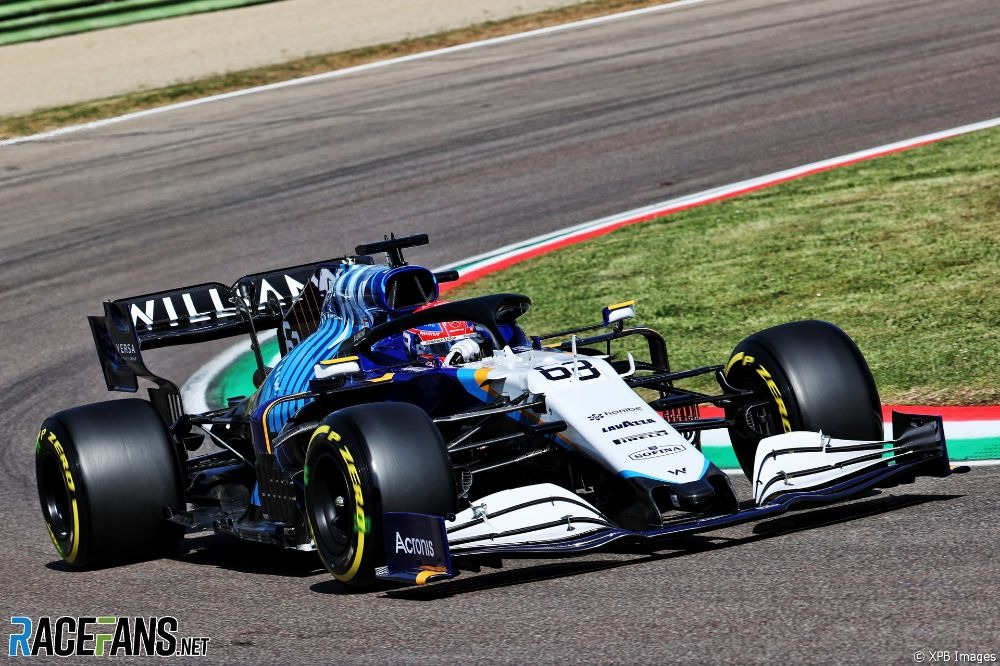

DRIVER PRESENTATION

Excelencia Técnica y Liderazgo Emergente de George Russell en la Estructura de Williams
George Russell inició su formación dominando las categorías de promoción, ganando los títulos de GP3 y Fórmula 2 en años consecutivos. Su debut en F1 con Williams en 2019 reveló a un piloto de una precisión quirúrgica en clasificación, ganándose el apodo de 'Mr. Saturday'. El ciclo 2021 fue su consagración, logrando actuaciones históricas como la P2 en la clasificación del GP de Bélgica bajo condiciones extremas de lluvia, lo que le otorgó su primer podio en la categoría. Russell ha demostrado ser un líder técnico capaz de elevar el rendimiento de un monoplaza limitado, aportando una visión estratégica y una velocidad pura que lo llevaron a su eventual fichaje por Mercedes. Su capacidad para gestionar la presión y su conocimiento profundo de la dinámica vehicular lo posicionan como uno de los pilares del futuro de la Fórmula 1.

Bélgica 2021: Russell logra una clasificación legendaria bajo la lluvia, poniendo su Williams en primera fila y logrando su primer podio.

2020: George debuta con Mercedes sustituyendo a Hamilton, liderando gran parte de la carrera y asombrando al mundo.
Hungría 2021: Un momento de pura emoción al lograr sus primeros puntos para el equipo tras años de trabajo duro.